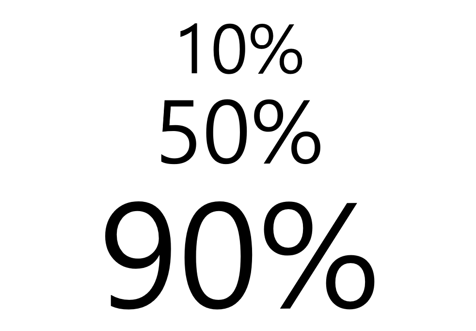

[10%, 50%, 90% 는 이 정도 차이일까?]
28% 와 1%
"대한민국 국민 중에 암으로 사망하는 사람은 28%다.
그러니 대한민국 국민인 나도 암으로 죽을 확률은 28%다."
다들 이런식으로 생각하고 있지는 않은가?
또는
"아무리 확률이 1% 라도 나한테 닥치면 그건 100%다. 결국 나에게 있어서는 되든, 안되든 두 가지. 즉 50:50 이다."
라는 주장을 믿고 있지는 않은가
내가 암으로 죽을 확률도 28%인가?
이런 주장들은 모두 통계와 확률의 차이를 정확히 알지 못할 때 그럴싸한 논리로 받아들여진다.
일단 암 사망률부터 살펴보자.
실제로 2016년도 대한민국 암 사망률은 28% 정도다. 당해 사망자 중에 28%가 암으로 죽었다는거다.
이것은 당연히 통계다.
이 통계로부터 대한민국 모든 사람이 암으로 사망할 확률도 28% 로 동일하다고 말할 수 있을까?
다음 두 사람을 놓고 누가 암에 걸려서 사망할지 내기를 해보자.
1. 양가 모두 암 가족력이 있는 반도체공장 현장 직원.
2. 조상대대로 암은 걸려본 적이 없는 시골 토박이 청년.
승률을 높이려면 당연히 1번에 걸어야 할 것이다.
보다시피 암사망률 통계 28%의 대한민국에 살지만 두 사람의 암 발병 가능성은 분명히 다르다.
그렇다면 암사망률 28%는 아무짝에도 쓸모 없는 값인가?
통계는 왜 확률과 다른가?
통계는 통계 모집단의 특성을 이해하기 위해 사용한다.
즉, 모집단의 특성이 '대한민국 국민' 이라면 대한민국 국민을 싸잡아서 하나의 값을 뽑아내는게 통계다.
하지만 개개인은 보다 복잡하고 섬세한 구분이 가능하다.
예를 들어, '대한민국 흡연자' 라는 모집단에서 추출한 암사망률 통계는 28% 보다 높다.
당연히 '대한민국 비흡연자' 라는 모집단에서의 통계는 28% 보다 낮다. 이들 집단을 합치면 대한민국 암사망률 28%가 나온다.
결국 개인의 암사망 확률을 알기 위해서는 그 사람이 속한 집단 중 가장 작은 집단의 통계가 필요한 셈이다.
그런데 1976년에 대한민국 서울에서 태어나 1981년에 경기도 안양시로 이주하고 컴퓨터공학과를 졸업해 2017년 현재까지 20여차례 이사와 7차례 이직을 경험한 남자 집단의 암사망 통계를 구할 수 있을까?
통계로부터 확률을 구하는 방법
개인의 특성을 모두 반영한 집단은 매우 크기가 작아서 통계를 구하기 어렵다. 통계를 구할 수 없으니 확률도 구할 수 없다.
그래서 사용하는 방법이 특성 모두가 아닌, 특성 각각의 집단 비교 통계를 활용하는 것이다.
예를 들어, 흡연자 집단의 암사망률이 전체 평균보다 10%가 높다는 통계는 구할 수 있다.
직업군별로 반도체공장 직원의 암사망률이 전체 평균보다 5% 높다는 통계도 구할 수 있다.
남자가 평균보다 3% 높다던지, 농어촌 시민이 평균보다 2% 낮다(-2%)는 통계도 구할 수 있다.
채식주의자가 -4%, 기혼이 -1%, 가족력이 있는 경우 +9%, 없는 경우 -7%
마찬가지로 특정 질병을 앓은 경험이 있을 경우에도 암사망률은 평균보다 오를 수 있다.
이렇게 내가 속한 집단의 암사망률과 평균의 차이를 모아서 전체집단 통계 28% 에 더하면 내 암사망 확률이 나오게된다.
(남자와 여자를 비교하지 않고 평균과 비교했다는 부분에 주목하자.)
물론 이 방법이 내 진짜 암사망 확률을 나타내는건 아니다.
'통계로부터 확률을 구하는 방법' 일 뿐이다.
통계가 충분할 수록 실제 확률에 근접하게 된다.
어차피 나에게는 50:50 아닌가?
이쯤 되면 아무리 다양한 통계를 갖고 있더라도 내 암사망률을 정확히 알아내는게 불가능하다는 것은 알 수 있다.
하지만 그보다 더 큰 문제는, 살아오면서 확률이 낮을 때에도 '재수없이' 걸리거나, 확률이 높은데도 '재수없이' 피해가는 경우를 무수히 겪어봤다는 점이다.
이러니 암사망 확률이 1%로 나온들, 그 1%에도 걸릴 가능성이 있으니 나에게는 '암으로 사망하느냐' vs '그렇지 않으냐' 의 두 가지 경우만 있다는 말이 그럴듯하게 들린다.
이에 대해서는 사실 별로 언급하고 싶지 않다.
왜냐하면, 이 논리가 사람들이 흔히 하는 "비올 확률이 10%면 비가 안오겠네" 식의 실수를 막아준다고 생각하기 때문이다.
심지어 그런 방심을 하지 말자는 뜻으로 만든 논리 같기도 하다.
결론적으로 50:50 논리는 헛소리지만
그렇게 믿는건 나쁘지 않다고 본다.
※ 이 글에 나온 통계 중 2016년 암사망률을 제외한 값은 실제 데이터가 아닙니다.